35+ Easy Christmas Appetizers for a Crowd
📌 Save to Pinterest
Christmas appetizers set the tone for the whole evening: guests gather around the table, graze, talk, and go back for seconds before dinner is even served. This roundup gathers thirty-five easy appetizers that work for a crowd — dips you can scoop, bites you can pick up with one hand, cheese boards that look like a centerpiece, and warm starters straight from the oven. Pick a few from each group, and the table takes care of itself.
How to plan appetizers for a crowd
Plan for variety, not volume: a dip, something on a stick, something cheesy, something warm, and something sweet covers every guest. Count on a few bites per person per hour, and make the food easy to reach — spread it across the table instead of crowding it in one spot. Keep cold food cold and hot food hot, put out small plates and napkins, and label anything with nuts or pork so guests with allergies can steer clear. Most of the appetizers below can be prepped ahead, so the host can enjoy the party too.
Good to know: Everything is written in American English, and measurements use US customary units — cups, tablespoons, and Fahrenheit — for cooks in the United States. Always follow safe food-handling guidance, and keep perishable appetizers refrigerated until serving time.
Food safety: cook ground meat and fresh sausage to 160°F (71°C), and cook bacon until crisp. Heat pre-cooked sausages and meatballs until steaming hot throughout. Check with a food thermometer.
Dips & spreads
Dips are the easiest crowd appetizer there is: one bowl, a stack of crackers, and everyone helps themselves.
1. Classic Spinach & Artichoke Dip

This creamy, cheesy dip is the bowl that always empties first at a Christmas party. Tender spinach and briny artichoke hearts fold into cream cheese, sour cream, and mayonnaise, then bake under a blanket of melted mozzarella and Parmesan until bubbling and lightly golden. Serve it warm and bubbling, with tortilla chips, toasted baguette slices, or vegetable sticks for scooping.
Ingredients
- 10 ounces frozen chopped spinach, thawed and squeezed dry
- 1 can (14 ounces) artichoke hearts, drained and chopped
- 8 ounces cream cheese, softened
- 1/2 cup sour cream
- 1/2 cup mayonnaise
- 1 cup shredded mozzarella cheese
- 1/2 cup grated Parmesan cheese
- 2 garlic cloves, minced
- 1/2 teaspoon salt
- 1/4 teaspoon black pepper
Directions
- Preheat the oven to 375°F. Lightly grease a small baking dish so the dip releases easily and the edges brown nicely.
- Set the thawed spinach in a clean kitchen towel and squeeze out as much water as you can, so the dip stays thick and creamy instead of watery.
- In a large bowl, stir the spinach, chopped artichoke hearts, softened cream cheese, sour cream, mayonnaise, mozzarella, Parmesan, minced garlic, salt, and pepper together until evenly mixed.
- Spoon the mixture into the prepared baking dish and smooth the top with a spatula, spreading it into an even layer.
- Bake for 20 to 25 minutes, until the dip is bubbling around the edges and lightly golden on top.
- Let it stand for 5 minutes so it firms up slightly and is cool enough to scoop without burning.
- Serve warm straight from the dish, with tortilla chips, toasted baguette slices, or vegetable sticks alongside for dipping.
2. Cranberry Brie Dip

Melted brie topped with sweet-tart whole-berry cranberry sauce is a Christmas showpiece that takes almost no work. The cheese turns soft and runny in the oven, the cranberry sauce adds a bright ruby color, and chopped pecans and fresh rosemary give it crunch and a piney holiday scent. A drizzle of honey ties it all together for a warm, festive dip.
Ingredients
- 1 round brie cheese (8 ounces), rind removed from the top
- 1/2 cup whole-berry cranberry sauce
- 2 tablespoons chopped pecans
- 1 teaspoon chopped fresh rosemary
- 1 tablespoon honey (optional)
Directions
- Preheat the oven to 350°F and choose a small oven-safe baking dish that fits the brie snugly.
- Trim the rind from the top of the brie only, leaving the sides and bottom in place so the cheese holds its shape as it melts.
- Place the brie in the baking dish and spoon the cranberry sauce evenly over the top.
- Bake for 15 to 20 minutes, until the cheese is soft, melty, and slightly puffed at the edges.
- Remove the dish from the oven and sprinkle the chopped pecans and fresh rosemary over the warm cranberry topping.
- Drizzle with honey if you like, letting it pool lightly over the cranberries.
- Serve warm right away with crackers for scooping and spreading.
3. Whipped Feta with Honey & Herbs

Salty feta whipped with cream cheese, olive oil, and lemon juice turns into a smooth, cloud-like spread that tastes far fancier than it is. A drizzle of honey adds sweetness, fresh herbs bring a bright green finish, and black pepper gives it a gentle bite. Serve it with crostini or warm pita triangles for a dip that looks elegant on any holiday table.
Ingredients
- 8 ounces feta cheese, crumbled
- 4 ounces cream cheese, softened
- 2 tablespoons olive oil
- 1 tablespoon lemon juice
- 2 tablespoons honey, plus more for drizzling
- 1 tablespoon chopped fresh herbs (thyme, rosemary, or dill)
- 1/4 teaspoon black pepper
Directions
- Add the crumbled feta, softened cream cheese, olive oil, and lemon juice to a food processor.
- Blend for about 2 minutes, stopping to scrape down the sides once or twice, until the mixture is smooth, creamy, and light.
- Taste and add the 2 tablespoons of honey, then pulse briefly to mix it in.
- Spoon the whipped feta into a serving bowl and smooth the top with the back of a spoon, making a shallow swirl.
- Drizzle with extra honey so it pools in the swirls and runs down the sides.
- Sprinkle with the chopped fresh herbs and black pepper.
- Serve at once with crostini or warm pita triangles for dipping and spreading.
4. Roasted Red Pepper Hummus

This smooth, smoky hummus blends chickpeas with sweet roasted red peppers, tahini, lemon juice, and a pinch of smoked paprika for a dip that is lighter than most party food but still full of flavor. It comes out silky and blush-pink, with a bright, tangy finish. Serve it with pita chips and vegetable sticks for guests who want something fresh on the table.
Ingredients
- 1 can (15 ounces) chickpeas, drained and rinsed
- 1/2 cup roasted red peppers, drained
- 1/4 cup tahini
- 2 tablespoons lemon juice
- 1 garlic clove
- 2 tablespoons olive oil
- 1/2 teaspoon smoked paprika
- 1/2 teaspoon salt
Directions
- Drain and rinse the chickpeas, and drain the roasted red peppers so no extra liquid thins the hummus.
- Add the chickpeas, roasted peppers, tahini, lemon juice, garlic clove, olive oil, smoked paprika, and salt to a food processor.
- Blend for about 2 minutes, stopping to scrape down the sides as needed, until the hummus is completely smooth and creamy.
- If the hummus is too thick to scoop easily, add 1 to 2 tablespoons of water, one spoonful at a time, and blend again.
- Taste and adjust the salt or lemon juice if needed, then spoon the hummus into a serving bowl.
- Drizzle with a little extra olive oil and serve with pita chips, cucumber sticks, and carrot sticks.
5. Caramelized Onion Dip

Slow-cooked onions turn deep golden and sweet, then fold into a creamy base of sour cream and cream cheese for a dip that tastes like the classic onion dip, only better. Worcestershire sauce adds a savory depth, and the soft, jammy onions give every scoop a rich, buttery flavor. Serve it chilled with ridged potato chips or crusty bread.
Ingredients
- 2 large yellow onions, thinly sliced
- 2 tablespoons butter
- 1 tablespoon olive oil
- 1 cup sour cream
- 4 ounces cream cheese, softened
- 1 teaspoon Worcestershire sauce
- 1/2 teaspoon salt
- 1/4 teaspoon black pepper
Directions
- Melt the butter with the olive oil in a large skillet over medium-low heat.
- Add the thinly sliced onions and cook slowly for 25 to 30 minutes, stirring often, until they are deep golden, soft, and sweet. Lower the heat if they start to brown too fast.
- Remove the onions from the heat and let them cool for 10 minutes so they do not melt the creamy base.
- In a medium bowl, stir the sour cream, softened cream cheese, Worcestershire sauce, salt, and pepper together until smooth.
- Fold the cooled caramelized onions into the cream mixture, mixing gently until they are evenly spread through the dip.
- Cover and chill for at least 30 minutes so the flavors meld and the dip firms up.
- Serve cold with ridged potato chips or slices of crusty bread.
6. Smoky Queso Dip

This warm cheese dip is the one guests hover around all evening. White American cheese and cream cheese melt into a silky, smooth queso with diced green chiles, smoked paprika, cumin, and garlic powder for a gentle smoky heat. Kept warm in a small slow cooker, it stays pourable for hours, ready for tortilla chips and second helpings.
Ingredients
- 1 pound white American cheese, cubed
- 4 ounces cream cheese, cubed
- 1 cup milk
- 1 can (4 ounces) diced green chiles
- 1 teaspoon smoked paprika
- 1/2 teaspoon cumin
- 1/2 teaspoon garlic powder
Directions
- Cube the white American cheese and the cream cheese into small pieces so they melt evenly.
- Add the cheese, cream cheese, milk, diced green chiles, smoked paprika, cumin, and garlic powder to a slow cooker.
- Cover and cook on low for 1 hour, stirring every 15 minutes, scraping the sides and bottom as the cheese melts.
- Keep stirring until the cheese is completely melted and the dip is smooth and glossy, with no lumps left.
- If the queso is thicker than you like, stir in a splash more milk until it reaches a dippable consistency.
- Switch the slow cooker to the low or warm setting and serve the queso warm, straight from the pot, with tortilla chips.
7. Pomegranate Guacamole
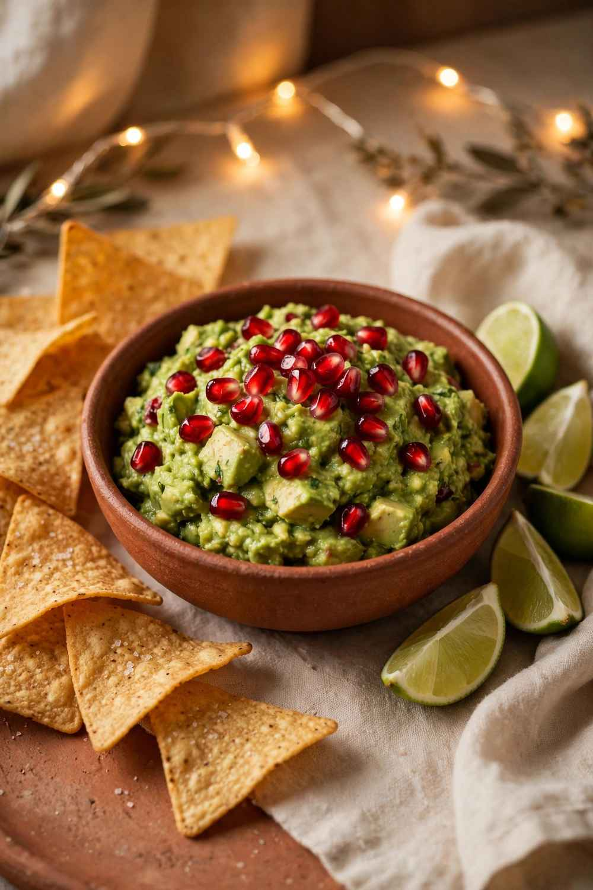
Classic guacamole gets a Christmas makeover with a scatter of pomegranate seeds on top. The creamy, buttery avocado is seasoned with lime juice, red onion, cilantro, and a little jalapeño, while the pomegranate seeds add a tart crunch and a jewel-red color against the green. It looks made for the holidays and tastes bright, fresh, and rich.
Ingredients
- 3 ripe avocados
- 1/4 cup pomegranate seeds
- 2 tablespoons lime juice
- 1/4 cup finely diced red onion
- 1 small jalapeño, seeded and minced (optional)
- 2 tablespoons chopped fresh cilantro
- 1/2 teaspoon salt
Directions
- Halve the avocados, remove the pits, and scoop the flesh into a medium bowl.
- Add the lime juice and salt, then mash with a fork until mostly smooth, leaving a few small chunks for texture.
- Fold in the finely diced red onion, minced jalapeño if using, and chopped cilantro until evenly mixed.
- Taste and add a pinch more salt or lime juice if needed.
- Spoon the guacamole into a serving bowl and smooth the top lightly.
- Scatter the pomegranate seeds evenly over the top so every scoop gets a few.
- Serve right away with tortilla chips, before the avocado has time to brown.

Bites on a stick
Skewers and one-bite starters are made for parties: no plates needed, no mess, and easy to count out for a crowd.
8. Caprese Skewers
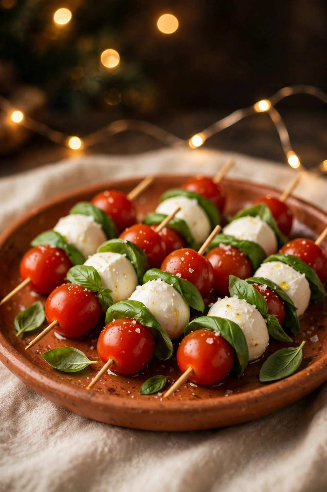
Cherry tomatoes, fresh mozzarella, and basil on a toothpick are the freshest bite on the tray, bright and light against all the rich holiday food. A drizzle of balsamic glaze and olive oil adds sweetness and shine, while salt and pepper wake up the flavors. They are quick to assemble, easy to eat standing up, and the first skewers to disappear.
Ingredients
- 24 cherry tomatoes
- 24 small fresh mozzarella balls
- 24 fresh basil leaves
- 2 tablespoons balsamic glaze
- 1 tablespoon olive oil
- 1/4 teaspoon salt
- 1/4 teaspoon black pepper
- 24 toothpicks or small skewers
Directions
- Rinse the cherry tomatoes and basil leaves and pat them dry. Drain the mozzarella balls well so the skewers do not slide around.
- Thread one cherry tomato, one basil leaf folded in half, and one mozzarella ball onto each toothpick, pushing them together snugly.
- Repeat until all 24 skewers are built, keeping the tomato at one end and the mozzarella at the other for a neat look.
- Arrange the finished skewers in a single layer on a serving platter, with a little space between them.
- Drizzle the olive oil evenly over the skewers, then drizzle the balsamic glaze in thin lines across the top.
- Season with salt and black pepper and serve right away, or chill briefly until guests arrive.
9. Antipasto Skewers

Each skewer packs a whole antipasto plate into a single bite: salty folded salami, creamy mozzarella, briny olives, and sweet roasted red peppers, finished with olive oil and Italian seasoning. They are hearty, colorful, and easy to count out for a crowd, with no plates or forks needed. Set them out at room temperature and let guests grab them by the handful.
Ingredients
- 24 slices salami, folded
- 24 small mozzarella balls
- 24 pitted olives
- 24 roasted red pepper strips
- 1 tablespoon olive oil
- 1 teaspoon Italian seasoning
- 24 toothpicks or small skewers
Directions
- Drain the mozzarella balls and olives well, and pat the roasted red pepper strips dry so the skewers stay neat.
- Fold each salami slice in half, then in half again, so it forms a small, thick square that is easy to thread.
- Thread a folded salami slice, a mozzarella ball, an olive, and a pepper strip onto each toothpick.
- Repeat until all 24 skewers are built, keeping the ingredients in the same order on each one.
- Arrange the skewers in a single layer on a serving platter.
- Drizzle with olive oil and sprinkle the Italian seasoning evenly over the top.
- Serve at room temperature.
10. Cranberry & Brie Bites
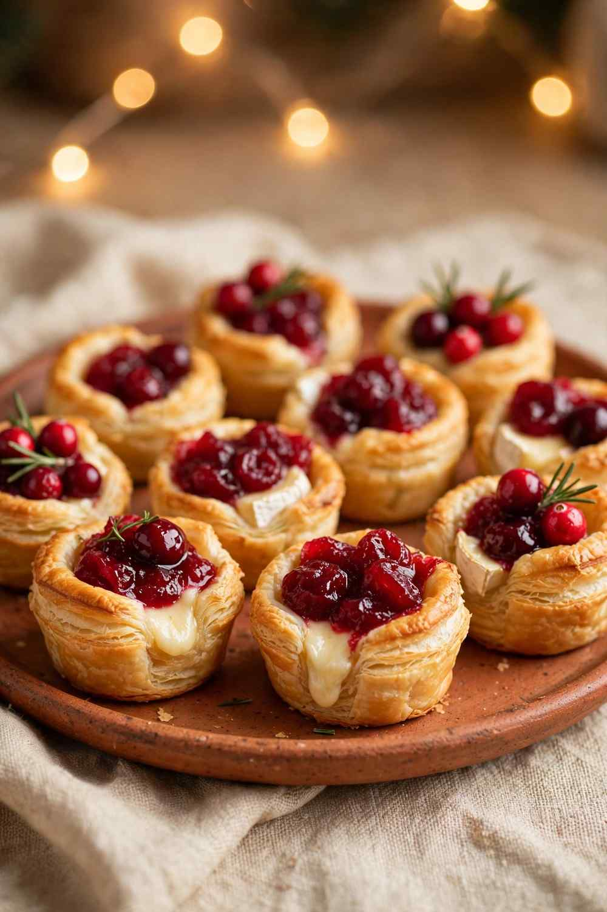
Puff pastry cups filled with creamy brie and a spoonful of whole-berry cranberry sauce bake until golden and flaky, with the cheese melted inside. Chopped pecans add a warm crunch on top, and the red cranberry peeking out of each cup looks perfectly festive. They are sweet, creamy, and sized for one perfect bite, straight from the oven.
Ingredients
- 1 sheet puff pastry, thawed
- 8 ounces brie cheese, cut into 24 small cubes
- 1/2 cup whole-berry cranberry sauce
- 2 tablespoons chopped pecans
- 1 egg, beaten (for egg wash)
Directions
- Preheat the oven to 375°F and grease a 24-cup mini muffin tin well.
- On a lightly floured surface, cut the thawed puff pastry into 24 even squares.
- Press each square gently into a muffin cup, letting the corners stick up slightly.
- Place one cube of brie in each cup and spoon about a teaspoon of cranberry sauce on top of the cheese.
- Brush the exposed pastry edges with the beaten egg, then sprinkle the chopped pecans over the tops.
- Bake for 15 to 18 minutes, until the pastry is puffed and golden and the brie is fully melted.
- Cool in the tin for 5 minutes so the cups hold their shape, then lift them out and serve warm.
11. Prosciutto-Wrapped Dates
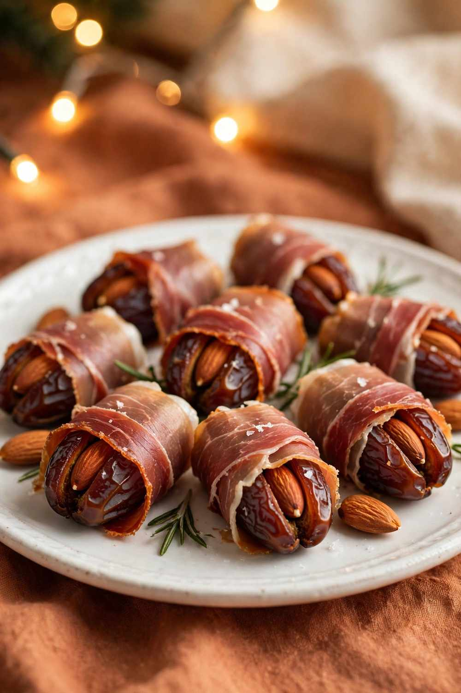
Sweet Medjool dates stuffed with a whole almond and wrapped in salty prosciutto bake in minutes into a bite that tastes like something from a restaurant. The prosciutto crisps at the edges, the date turns soft and caramel-sweet inside, and a drizzle of honey adds a final glossy sweetness. They are elegant, easy, and gone almost as fast as they come out of the oven.
Ingredients
- 24 pitted Medjool dates
- 24 whole almonds
- 12 slices prosciutto, cut in half lengthwise
- 1 tablespoon honey (optional)
Directions
- Preheat the oven to 375°F and line a baking sheet with parchment paper.
- Cut the prosciutto slices in half lengthwise so you have 24 long strips.
- Gently open each pitted date and tuck one whole almond inside, pressing the date closed around it.
- Wrap each stuffed date snugly with a half slice of prosciutto, overlapping the ends slightly.
- Place the wrapped dates seam-side down on the prepared baking sheet, spaced about an inch apart.
- Bake for 10 to 12 minutes, until the prosciutto is crisp at the edges and the dates are warm through.
- Drizzle with honey if you like and serve warm.
12. Bacon-Wrapped Dates

The classic party bite: smoky bacon wrapped around a sweet, soft Medjool date and baked until the bacon is crisp. The contrast of salty, smoky pork and caramel-sweet fruit is impossible to resist, and a light sprinkle of brown sugar makes the edges even more caramelized. Make a double batch, because these never last past the first round.
Ingredients
- 24 pitted Medjool dates
- 12 slices bacon, cut in half crosswise
- 24 toothpicks
- 1 tablespoon brown sugar (optional)
Directions
- Preheat the oven to 375°F and line a baking sheet with parchment paper.
- Cut the bacon slices in half crosswise so you have 24 short pieces.
- Wrap each date snugly with a half slice of bacon, overlapping the ends, and secure it with a toothpick pushed through the seam.
- Place the wrapped dates seam-side down on the prepared baking sheet, spaced about an inch apart.
- Sprinkle with brown sugar if you like, for a sweet, caramelized finish.
- Bake for 18 to 20 minutes, until the bacon is crisp all over and the dates are hot through.
- Drain briefly on paper towels to remove extra grease, then serve warm.
Food safety: cook the bacon until crisp.
13. Shrimp Cocktail Shooters
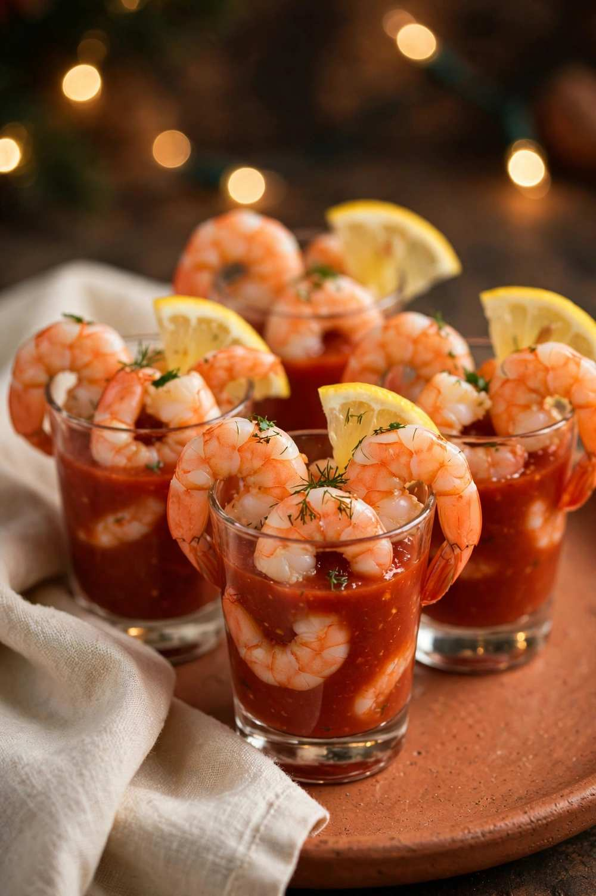
Chilled shrimp with zesty cocktail sauce served in small glasses is an elegant, easy-to-hold appetizer that refreshes the palate between richer bites. A spoonful of horseradish-spiked sauce, a squeeze of lemon, and a sprinkle of parsley make each little glass look polished and bright. They are quick to assemble and bring a cool, classic touch to the holiday table.
Ingredients
- 24 cooked large shrimp, peeled and deveined
- 1 cup cocktail sauce
- 1 tablespoon prepared horseradish
- 1 lemon, cut into wedges
- 2 tablespoons chopped fresh parsley
- 24 small shot glasses or cups
Directions
- In a small bowl, stir the cocktail sauce and prepared horseradish together until evenly mixed.
- Spoon about 2 teaspoons of the sauce into the bottom of each shot glass.
- Hang one cooked shrimp over the rim of each glass, tail up, so it rests in the sauce.
- Squeeze a little lemon juice over each shrimp and tuck a lemon wedge alongside if you like.
- Sprinkle the chopped fresh parsley over the tops.
- Chill the finished shooters in the refrigerator until serving time, and serve cold.
14. Cucumber & Smoked Salmon Bites

Cool cucumber rounds topped with herbed cream cheese and silky smoked salmon are a light, pretty counterpoint to the rich dishes on the table. The cucumber stays crisp and refreshing, the dill and lemon in the cream cheese add brightness, and the salmon brings a gentle smoky saltiness. They look delicate on a platter and take only minutes to assemble.
Ingredients
- 1 large English cucumber, sliced into 24 rounds
- 4 ounces cream cheese, softened
- 1 tablespoon chopped fresh dill, plus more for garnish
- 1 teaspoon lemon juice
- 4 ounces smoked salmon, cut into 24 pieces
- 1/4 teaspoon black pepper
Directions
- Slice the English cucumber into 24 even rounds, about 1/4 inch thick, and lay them on a serving platter.
- In a small bowl, stir the softened cream cheese, chopped dill, lemon juice, and black pepper together until smooth.
- Spread about a teaspoon of the herbed cream cheese mixture on each cucumber round, covering the top evenly.
- Lay one piece of smoked salmon over the cream cheese on each round, folding it loosely so it looks full.
- Garnish each bite with a small sprig of fresh dill.
- Cover and chill until serving time, and serve cold.
Cheese & charcuterie
A cheese board is both food and decoration — build it once, and it feeds the crowd for hours.
15. Christmas Cheese Board

A big cheese board is both food and decoration, and this one is the centerpiece of the table. Sharp cheddar, creamy brie, sliced gouda, and tangy blue cheese sit alongside folded cured meats, grapes, dried cranberries, nuts, and crackers, with rosemary sprigs tucked in for a festive, piney look. Guests graze for hours, mixing and matching their own bites.
Ingredients
- 8 ounces sharp cheddar, cut into cubes
- 8 ounces brie, whole
- 8 ounces gouda, sliced
- 4 ounces blue cheese
- 6 ounces cured meats (salami and prosciutto)
- 1 cup grapes
- 1/2 cup dried cranberries
- 1/2 cup mixed nuts
- 1 box crackers
- Fresh rosemary sprigs, for garnish
Directions
- Choose a large board or platter with plenty of room, and set it in the center of the table.
- Place the cheeses on the board first, spacing them apart: the cheddar cubes in one area, the whole brie in another, the gouda slices fanned out, and the blue cheese in a small wedge.
- Fold the salami into quarters and drape the prosciutto in loose ribbons, arranging the cured meats in the spaces between the cheeses.
- Fill the remaining gaps with small clusters of grapes, spoonfuls of dried cranberries, and piles of mixed nuts.
- Tuck crackers along the edges and into any open spots, keeping a few stacks upright for easy grabbing.
- Tuck fresh rosemary sprigs into the gaps for color and scent, then serve at room temperature.
16. Baked Brie en Croûte
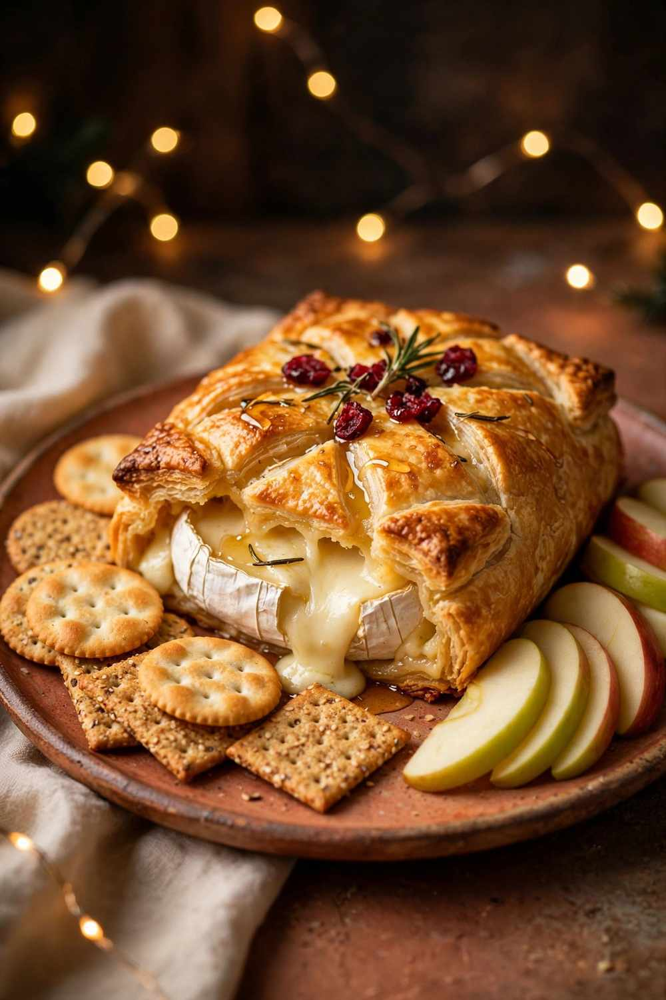
A whole round of brie wrapped in puff pastry and baked until the outside is deep golden and flaky and the inside is molten and runny. Apricot jam or cranberry sauce adds sweetness, chopped pecans bring a warm crunch, and the pastry seals it all in. Cut it open at the table and serve it with crackers and sliced apples.
Ingredients
- 1 sheet puff pastry, thawed
- 1 round brie cheese (8 ounces)
- 1/4 cup apricot jam or cranberry sauce
- 1/4 cup chopped pecans
- 1 egg, beaten (for egg wash)
Directions
- Preheat the oven to 400°F and line a baking sheet with parchment paper.
- Unfold the thawed puff pastry on the baking sheet and smooth it flat.
- Place the brie round in the center of the pastry.
- Spoon the jam or cranberry sauce over the top of the brie and sprinkle with the chopped pecans.
- Fold the pastry up and over the brie, gathering the corners in the center and pinching the edges to seal it completely. Trim any extra pastry if needed.
- Brush the whole surface with the beaten egg so it bakes up glossy and golden.
- Bake for 20 to 25 minutes, until the pastry is deep golden and puffed.
- Let it stand for 10 minutes so the cheese settles slightly, then serve with crackers and sliced apples.
17. Goat Cheese & Cranberry Log

A creamy log of goat cheese and cream cheese, sweetened with honey and brightened with orange zest, is rolled in finely chopped dried cranberries and pecans for a ruby-red, crunchy coat. It slices beautifully at the table into neat rounds that spread easily on water crackers. Tart, tangy, nutty, and sweet in every bite, it looks as festive as it tastes.
Ingredients
- 8 ounces goat cheese, softened
- 4 ounces cream cheese, softened
- 1/2 cup dried cranberries, finely chopped
- 1/2 cup chopped pecans
- 1 tablespoon honey
- 1/2 teaspoon orange zest
Directions
- In a medium bowl, beat the softened goat cheese and cream cheese together with the honey and orange zest until completely smooth.
- Spoon the mixture onto a sheet of plastic wrap and shape it into a log about 8 inches long, rolling the wrap around it and twisting the ends to seal.
- Chill the log in the refrigerator for 1 hour, until firm enough to hold its shape.
- Mix the finely chopped cranberries and chopped pecans together on a plate or a sheet of parchment.
- Unwrap the chilled log and roll it in the cranberry-pecan mixture, pressing gently so the coating sticks all over.
- Place the coated log on a serving board and slice it at the table, serving it with water crackers.
18. Classic Cheese Ball

The retro party favorite is back: a savory ball of cream cheese and sharp cheddar, seasoned with green onions, Worcestershire sauce, and garlic powder, then rolled in chopped pecans and fresh parsley. It is creamy inside, crunchy outside, and easy to make ahead. Set it out with crackers and watch guests keep coming back for another smear.
Ingredients
- 8 ounces cream cheese, softened
- 2 cups shredded sharp cheddar
- 1/4 cup finely chopped green onions
- 1 teaspoon Worcestershire sauce
- 1/2 teaspoon garlic powder
- 1/2 cup chopped pecans
- 1/4 cup chopped fresh parsley
Directions
- In a large bowl, beat the softened cream cheese, shredded sharp cheddar, finely chopped green onions, Worcestershire sauce, and garlic powder together until fully combined.
- Scrape the mixture onto a sheet of plastic wrap and shape it into a smooth ball, pressing it firmly so it holds together.
- Wrap the ball tightly in the plastic wrap and chill in the refrigerator for 2 hours, until firm.
- Mix the chopped pecans and chopped fresh parsley together on a plate.
- Unwrap the chilled cheese ball and roll it in the pecan-parsley mixture, pressing gently until it is coated all over.
- Place it on a serving plate and serve with crackers, letting guests spread it themselves.
19. Marinated Mozzarella & Tomatoes
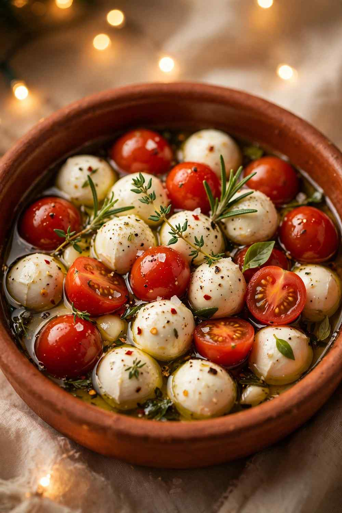
Small mozzarella balls and halved cherry tomatoes marinate in olive oil, balsamic vinegar, garlic, and fresh basil until every bite is juicy, tangy, and fragrant. The oil picks up the garlic and herbs, the tomatoes soften just slightly, and the cheese stays soft and milky. It is a light, fresh contrast to the richer boards, and it comes together with no cooking at all.
Ingredients
- 8 ounces small fresh mozzarella balls
- 1 pint cherry tomatoes, halved
- 1/4 cup olive oil
- 2 tablespoons balsamic vinegar
- 2 garlic cloves, minced
- 2 tablespoons chopped fresh basil
- 1/2 teaspoon salt
- 1/4 teaspoon black pepper
Directions
- In a medium bowl, whisk the olive oil, balsamic vinegar, minced garlic, salt, and pepper together until blended.
- Drain the mozzarella balls well and add them to the bowl, along with the halved cherry tomatoes.
- Toss gently to coat everything in the marinade, taking care not to crush the tomatoes.
- Cover the bowl and marinate for at least 30 minutes at room temperature, or up to 4 hours in the refrigerator, stirring once halfway through.
- If chilled, let the mixture sit out for about 15 minutes before serving so the oil loosens and the flavors wake up.
- Stir in the chopped fresh basil just before serving and spoon everything into a serving bowl with some of the marinade.
20. Spiced Nuts Trio
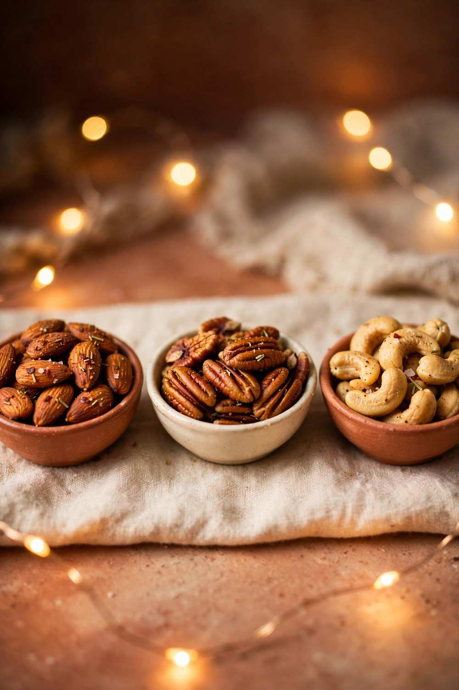
Almonds, pecans, and cashews are tossed with maple syrup, cinnamon, nutmeg, and a touch of cayenne, then roasted until fragrant, toasted, and lightly glazed. They come out warm, sweet, and gently spiced, with a little heat if you add the cayenne. Fill small bowls around the table and the room, and guests will graze on them all evening.
Ingredients
- 1 cup raw almonds
- 1 cup raw pecans
- 1 cup raw cashews
- 2 tablespoons maple syrup
- 1 teaspoon ground cinnamon
- 1/2 teaspoon ground nutmeg
- 1/2 teaspoon salt
- 1/4 teaspoon cayenne pepper (optional)
Directions
- Preheat the oven to 325°F and line a baking sheet with parchment paper.
- In a large bowl, toss the almonds, pecans, and cashews with the maple syrup, cinnamon, nutmeg, salt, and cayenne if using, until every nut is evenly coated.
- Spread the nuts in a single layer on the prepared baking sheet, leaving a little space between them so they roast instead of steaming.
- Roast for 20 to 25 minutes, stirring halfway through, until the nuts are fragrant, toasted, and lightly glossy.
- Remove from the oven and let the nuts cool completely on the baking sheet, where they will crisp up as the glaze sets.
- Break apart any clusters, then fill small bowls around the table for grazing.
21. Fig & Prosciutto Crostini

Toasted baguette slices spread with sweet fig spread and soft goat cheese or brie, then topped with a piece of salty prosciutto and a drizzle of honey, are sweet, salty, and elegant without any effort. Fresh thyme leaves finish each bite with a herbal note. They look polished on a platter and disappear fast at a holiday party.
Ingredients
- 1 baguette, sliced into 24 rounds
- 2 tablespoons olive oil
- 1/2 cup fig spread
- 4 ounces soft goat cheese or brie
- 6 slices prosciutto, torn into pieces
- 1 tablespoon honey
- Fresh thyme leaves, for garnish
Directions
- Preheat the oven to 375°F and line a baking sheet with parchment paper.
- Arrange the baguette slices in a single layer on the baking sheet and brush the tops lightly with olive oil.
- Bake for 8 to 10 minutes, until the toasts are crisp and golden at the edges.
- Let the toasts cool for a few minutes, then spread each one with fig spread and a smear of soft goat cheese or brie.
- Top each toast with a torn piece of prosciutto, folding it loosely so it looks full.
- Drizzle with honey and garnish with fresh thyme leaves, then arrange on a platter and serve.
Warm & baked appetizers
Warm appetizers are the ones guests remember — the smell alone pulls people into the kitchen.
22. Sausage Rolls
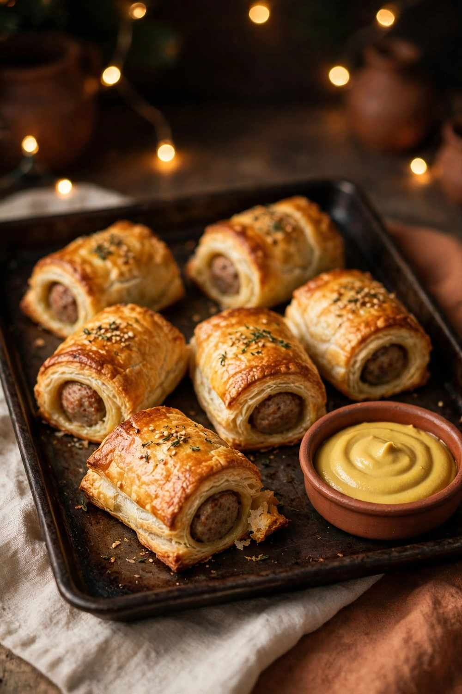
Flaky puff pastry wrapped around seasoned pork sausage, with onion, sage, and black pepper, bakes until golden and crisp outside and juicy inside. Cut small for a crowd, they are the warm, savory bite everyone reaches for first, and they are even better with a little mustard for dipping. They smell wonderful coming out of the oven.
Ingredients
- 1 sheet puff pastry, thawed
- 1 pound bulk pork sausage
- 1 small onion, finely diced
- 1 teaspoon dried sage
- 1/2 teaspoon black pepper
- 1 egg, beaten (for egg wash)
- 1 tablespoon sesame seeds (optional)
Directions
- Preheat the oven to 400°F and line a baking sheet with parchment paper.
- In a medium bowl, mix the bulk pork sausage, finely diced onion, dried sage, and black pepper together until evenly combined.
- Cut the thawed puff pastry sheet in half and spoon half the sausage mixture down the center of each half, shaping it into an even log.
- Roll the pastry around the filling, pinching the edges to seal, and place the rolls seam-side down.
- Cut each log into 12 small rolls, for 24 total, and arrange them on the baking sheet with a little space between them.
- Brush the tops with beaten egg and sprinkle with sesame seeds if you like.
- Bake for 20 to 25 minutes, until the pastry is golden and the sausage is cooked through, then serve warm with mustard.
Food safety: cook the pork sausage to 160°F (71°C) — check with a food thermometer.
23. Mini Quiches
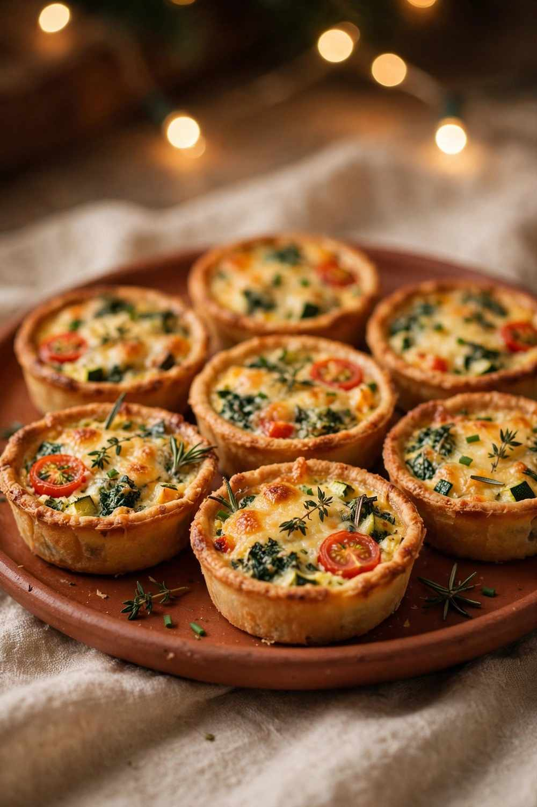
Tiny quiches with a crisp crust and a creamy filling of eggs, heavy cream, cheese, and finely diced vegetables are the perfect two-bite party food. They bake in a mini muffin tin until the filling is set and the crust is golden, and they hold well on a warming tray. Serve them warm or at room temperature and they will be gone in minutes.
Ingredients
- 1 package (15 ounces) refrigerated pie crusts
- 4 large eggs
- 1/2 cup heavy cream
- 1 cup shredded cheddar or Gruyère cheese
- 1/2 cup finely diced vegetables (spinach, bell pepper, or mushrooms)
- 1/4 teaspoon salt
- 1/4 teaspoon black pepper
Directions
- Preheat the oven to 375°F and grease a 24-cup mini muffin tin well.
- Unroll the pie crusts and cut them into 24 rounds, then press each round gently into a muffin cup, letting the edges rise slightly above the rim.
- In a medium bowl, whisk the eggs, heavy cream, salt, and pepper together until smooth.
- Stir the shredded cheese and finely diced vegetables into the egg mixture until evenly mixed.
- Spoon the filling into each crust, filling each cup about three-quarters full so it does not overflow.
- Bake for 15 to 18 minutes, until the filling is set in the center and the crust is golden.
- Cool in the tin for 5 minutes, then lift the quiches out and serve warm or at room temperature.
24. Puff Pastry Pinwheels

Puff pastry rolled with pesto, shredded mozzarella, and chopped sun-dried tomatoes, then sliced into golden spirals, looks impressive and takes only minutes to assemble. The pastry puffs up crisp and flaky, the cheese melts into the swirls, and the pesto and tomatoes add a bright, savory flavor. They are a beautiful warm bite for any holiday table.
Ingredients
- 1 sheet puff pastry, thawed
- 1/3 cup pesto
- 1/2 cup shredded mozzarella
- 1/4 cup chopped sun-dried tomatoes
- 1 egg, beaten (for egg wash)
Directions
- Preheat the oven to 400°F and line a baking sheet with parchment paper.
- Unfold the thawed puff pastry on a lightly floured surface and spread the pesto evenly over it, leaving a small border along one long edge.
- Sprinkle the shredded mozzarella and chopped sun-dried tomatoes evenly over the pesto.
- Starting from the long edge opposite the clean border, roll the pastry into a tight log, pressing the seam to seal.
- Chill the log in the refrigerator for 15 minutes so it firms up and slices cleanly.
- Slice the log into 24 pinwheels and place them cut-side up on the baking sheet, spaced about an inch apart.
- Brush the tops with beaten egg and bake for 15 to 18 minutes, until puffed and golden. Serve warm.
25. Cranberry Meatballs

Small meatballs simmered in a sweet-tart cranberry glaze with chili sauce, brown sugar, and lemon juice are made for a slow cooker and a pile of toothpicks. The sauce turns glossy and sticky as it bubbles, coating every meatball in a festive red glaze. They are sweet, savory, and effortless, and they stay warm for hours on the party table.
Ingredients
- 1 pound frozen cooked meatballs
- 1 can (14 ounces) whole-berry cranberry sauce
- 1/2 cup chili sauce
- 2 tablespoons brown sugar
- 1 tablespoon lemon juice
Directions
- In a slow cooker, stir the whole-berry cranberry sauce, chili sauce, brown sugar, and lemon juice together until combined, breaking up the cranberry sauce with the spoon.
- Add the frozen cooked meatballs and stir to coat them evenly in the sauce.
- Cover and cook on low for 2 to 3 hours, stirring once or twice, until the meatballs are heated through and the glaze is bubbling.
- Give the sauce a final stir so every meatball is glossy and well coated.
- Keep the slow cooker on the low setting and serve the meatballs warm, straight from the pot, with toothpicks alongside.
Food safety: heat the meatballs until steaming hot throughout.
26. Spinach & Feta Triangles

Crisp, flaky phyllo triangles filled with spinach, salty feta, egg, green onions, and dill are light, golden, and easy to eat standing up. The filling stays soft and savory inside while the buttered phyllo shatters into delicate layers with every bite. They look elegant on a platter with lemon wedges and taste like a little taste of the Mediterranean.
Ingredients
- 10 ounces frozen chopped spinach, thawed and squeezed dry
- 8 ounces feta cheese, crumbled
- 1 egg
- 2 green onions, finely chopped
- 1/2 teaspoon dried dill
- 1/4 teaspoon black pepper
- 1 package (16 ounces) phyllo dough, thawed
- 1/2 cup melted butter
Directions
- Preheat the oven to 375°F and line a baking sheet with parchment paper.
- Squeeze the thawed spinach dry in a clean kitchen towel, then stir it with the crumbled feta, egg, finely chopped green onions, dried dill, and black pepper in a medium bowl until combined.
- Unroll the phyllo dough and cut it into long strips, keeping the unused sheets covered with a damp towel so they do not dry out.
- Brush one strip lightly with melted butter, spoon a teaspoon of filling at one end, and fold the strip over and over into a triangle, brushing with butter as you fold.
- Repeat with the remaining strips and filling, placing each finished triangle on the baking sheet.
- Brush the tops of the triangles with melted butter so they bake up crisp and golden.
- Bake for 18 to 20 minutes, until the triangles are crisp and golden brown. Serve warm.
27. Stuffed Mushrooms
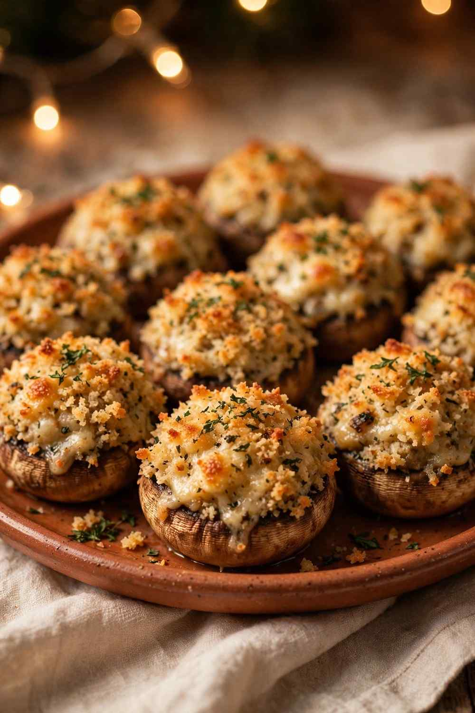
Mushroom caps filled with a savory stuffing of their own chopped stems, garlic, breadcrumbs, Parmesan, and parsley bake until the mushrooms are tender and the tops are golden and crisp. They are a classic for a reason: earthy, cheesy, and the perfect two-bite size. Serve them hot from the oven on a platter and they will disappear fast.
Ingredients
- 24 large white mushrooms, stems removed and finely chopped
- 2 tablespoons butter
- 2 garlic cloves, minced
- 1/2 cup breadcrumbs
- 1/2 cup grated Parmesan cheese
- 2 tablespoons chopped fresh parsley
- 1/2 teaspoon salt
- 1/4 teaspoon black pepper
Directions
- Preheat the oven to 375°F and line a baking sheet with parchment paper.
- Wipe the mushroom caps clean and set them hollow-side up on the baking sheet.
- Melt the butter in a skillet over medium heat, then cook the finely chopped mushroom stems and minced garlic for 5 minutes, until softened and fragrant.
- Remove from the heat and stir in the breadcrumbs, grated Parmesan, chopped parsley, salt, and pepper until the stuffing holds together.
- Spoon the filling generously into each mushroom cap, mounding it slightly on top.
- Bake for 18 to 20 minutes, until the mushrooms are tender and the tops are golden and crisp. Serve warm.
28. Bacon-Wrapped Smokies

Little cocktail smokies wrapped in bacon with a touch of brown sugar and a pinch of cayenne bake until the bacon is crisp and caramelized and the sausages are hot through. The glaze turns sticky and sweet against the smoky, salty bacon, and the toothpick makes them easy to grab. They are sweet, smoky, and dangerously easy to keep eating.
Ingredients
- 1 package (14 ounces) cocktail smokies
- 12 slices bacon, cut into thirds
- 1/2 cup brown sugar
- 1/4 teaspoon cayenne pepper (optional)
- 24 toothpicks
Directions
- Preheat the oven to 350°F and line a baking sheet with parchment paper.
- Cut each bacon slice into thirds so you have enough pieces to wrap every smokie.
- Wrap each smokie with a piece of bacon, overlapping the ends, and secure it with a toothpick pushed through the seam.
- Place the wrapped smokies seam-side down on the prepared baking sheet, spaced about an inch apart.
- Sprinkle the brown sugar evenly over the tops, along with the cayenne if using, so the bacon caramelizes as it bakes.
- Bake for 25 to 30 minutes, until the bacon is crisp and caramelized and the smokies are heated through.
- Drain briefly on the baking sheet or a paper towel-lined plate, then serve warm.
Food safety: heat the smokies until steaming hot throughout and cook the bacon until crisp.
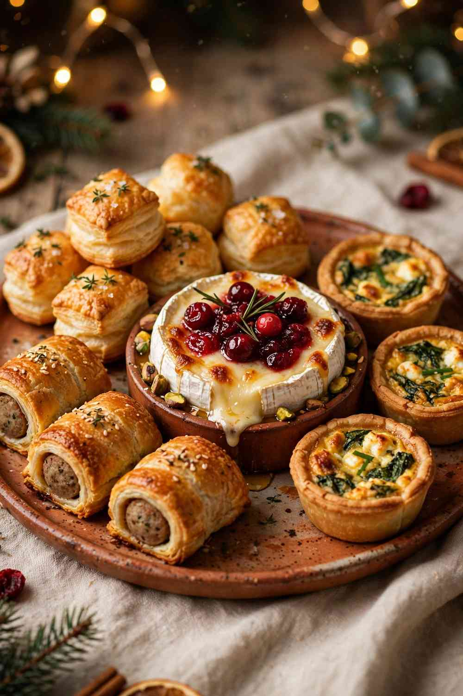
Sweet & savory crowd-pleasers
These are the bites that blur the line between appetizer and dessert — and the ones guests ask about on the way home.
29. Cranberry & Brie Puff Bites
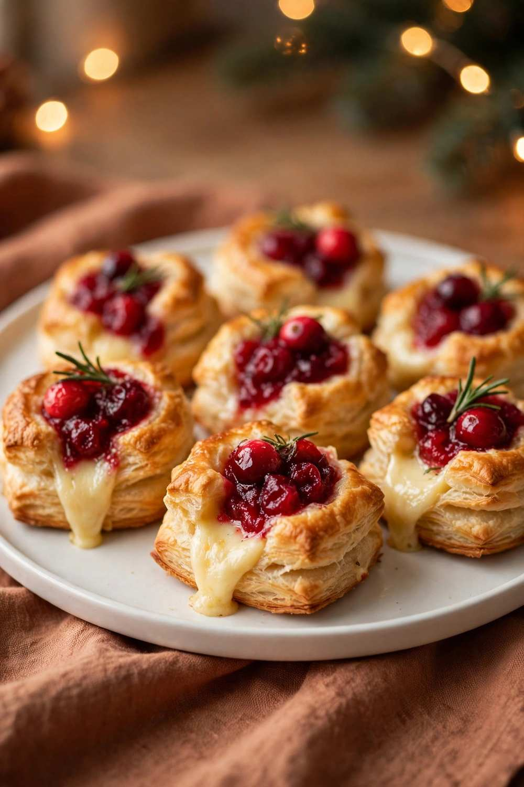
Golden puff pastry squares topped with a cube of melted brie and a spoonful of whole-berry cranberry sauce are festive, flaky, and gone in minutes. The pastry puffs up crisp and buttery, the brie turns soft and creamy, and the cranberry adds a sweet-tart pop of red. A sprinkle of pecans on top gives each bite a warm, toasty crunch.
Ingredients
- 1 sheet puff pastry, thawed
- 8 ounces brie cheese, cut into 24 small cubes
- 1/2 cup whole-berry cranberry sauce
- 1 egg, beaten (for egg wash)
- 2 tablespoons chopped pecans
Directions
- Preheat the oven to 375°F and line a baking sheet with parchment paper.
- On a lightly floured surface, cut the thawed puff pastry into 24 even squares.
- Place the squares on the prepared baking sheet, spaced about an inch apart.
- Place one cube of brie in the center of each square and spoon about a teaspoon of cranberry sauce on top of the cheese.
- Brush the exposed pastry edges with the beaten egg, then sprinkle the chopped pecans over the tops.
- Bake for 15 to 18 minutes, until the pastry is puffed and golden and the brie is fully melted.
- Cool on the baking sheet for 5 minutes so the bites hold their shape, then serve warm.
30. Apple & Cheddar Bites

Crisp apple slices with sharp cheddar on a round cracker, finished with a drizzle of honey, are sweet, salty, and crunchy in one bite. The Honeycrisp apple stays firm and juicy, the cheddar adds a tangy richness, and a squeeze of lemon juice keeps the apple bright and fresh. They take minutes to build and look lovely lined up on a platter.
Ingredients
- 2 crisp apples (such as Honeycrisp), cut into 24 thin slices
- 8 ounces sharp cheddar, cut into 24 small squares
- 24 round crackers
- 2 tablespoons honey
- 1 tablespoon lemon juice
Directions
- Slice the apples into 24 thin, even slices and remove any seeds.
- Toss the apple slices gently with the lemon juice so they stay bright and do not brown.
- Lay the round crackers in a single layer on a serving platter.
- Place one slice of apple on each cracker, then top it with a small square of sharp cheddar.
- Drizzle the honey lightly and evenly over the tops, letting a little run onto the cheddar.
- Serve right away, while the crackers are still crisp and the apple is fresh.
31. Pear & Gorgonzola Crostini
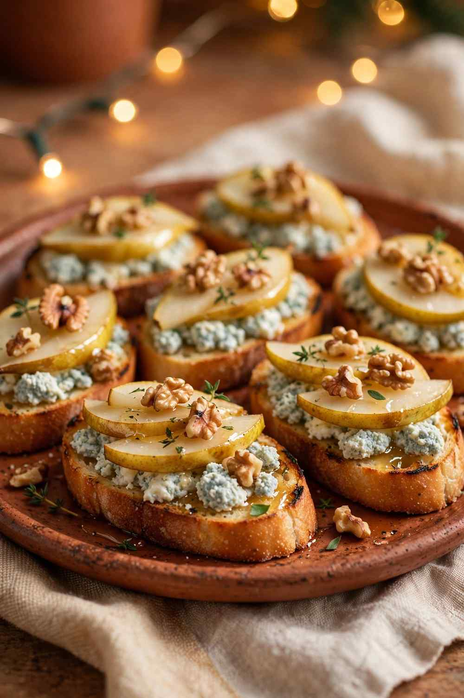
Ripe pear and creamy gorgonzola on toasted baguette, with a few walnuts and a drizzle of honey, is an elegant bite that tastes like a cheese course. The pear is sweet and juicy, the gorgonzola is rich and tangy, and the walnuts add crunch. It is simple to assemble, beautiful on a platter, and made for a holiday crowd.
Ingredients
- 1 baguette, sliced into 24 rounds
- 2 tablespoons olive oil
- 2 ripe pears, thinly sliced
- 6 ounces gorgonzola cheese, crumbled
- 1/4 cup chopped walnuts
- 2 tablespoons honey
Directions
- Preheat the oven to 375°F and line a baking sheet with parchment paper.
- Arrange the baguette slices in a single layer on the baking sheet and brush the tops lightly with olive oil.
- Bake for 8 to 10 minutes, until the toasts are crisp and golden at the edges.
- Let the toasts cool for a few minutes, then top each one with a thin slice of pear.
- Spoon a little crumbled gorgonzola over the pear on each toast.
- Sprinkle with the chopped walnuts, drizzle with honey, and arrange on a platter to serve.
32. Honey-Glazed Cocktail Sausages

Small cocktail sausages simmered in a honey, Dijon mustard, soy sauce, and garlic powder glaze turn sweet, tangy, and sticky in the best way. The slow cooker does all the work, and the glaze thickens as it cooks, coating every sausage in a glossy, golden finish. Keep them warm in the pot with toothpicks at the ready for easy grazing.
Ingredients
- 1 pound cocktail sausages
- 1/3 cup honey
- 2 tablespoons Dijon mustard
- 1 tablespoon soy sauce
- 1/2 teaspoon garlic powder
Directions
- In a slow cooker, stir the honey, Dijon mustard, soy sauce, and garlic powder together until smooth.
- Add the cocktail sausages and stir to coat them evenly in the glaze.
- Cover and cook on low for 2 hours, stirring once halfway through, until the sausages are heated through and the glaze is sticky.
- Give the sausages a final stir so every one is glossy and well coated.
- Keep the slow cooker on the low setting and serve the sausages warm, straight from the pot, with toothpicks alongside.
Food safety: heat the cocktail sausages until steaming hot throughout.
33. Maple-Glazed Bacon Bites

Thick-cut bacon cut into pieces, brushed with maple syrup, and baked with brown sugar and black pepper turns crisp at the edges and sticky-sweet all over. The maple caramelizes in the oven, the sugar adds a light crunch, and the pepper gives a gentle warmth. They are sweet, smoky, and impossible to stop at just one.
Ingredients
- 1 pound thick-cut bacon, cut into 2-inch pieces
- 1/4 cup maple syrup
- 1 tablespoon brown sugar
- 1/4 teaspoon black pepper
Directions
- Preheat the oven to 375°F and line a baking sheet with parchment paper.
- Arrange the bacon pieces in a single layer on the baking sheet, leaving a little space between them so they crisp evenly.
- Brush the tops generously with maple syrup and sprinkle with the brown sugar and black pepper.
- Bake for 20 to 25 minutes, flipping the pieces halfway through, until the bacon is crisp at the edges and glazed.
- Drain the bacon briefly on paper towels to remove extra grease, then serve warm.
Food safety: cook the bacon until crisp.
34. Cinnamon-Spiced Pecans

Raw pecan halves tossed in frothy egg white and vanilla, then coated in cinnamon, sugar, and salt, roast slowly until dry, fragrant, and lightly candied. They come out warm and sweet with a cozy cinnamon scent that fills the kitchen. Fill small bowls and scatter them around the room for a snack guests will keep reaching for.
Ingredients
- 3 cups raw pecan halves
- 1/4 cup granulated sugar
- 1 tablespoon ground cinnamon
- 1/2 teaspoon salt
- 1 egg white
- 1 teaspoon vanilla extract
Directions
- Preheat the oven to 300°F and line a baking sheet with parchment paper.
- In a large bowl, whisk the egg white and vanilla together until light and frothy.
- Add the pecan halves and toss until every nut is evenly coated with the egg white mixture.
- In a small bowl, stir the sugar, cinnamon, and salt together, then sprinkle it over the pecans and toss until they are evenly coated.
- Spread the pecans in a single layer on the prepared baking sheet.
- Bake for 30 minutes, stirring every 10 minutes, until the nuts are dry, fragrant, and lightly crisp.
- Cool completely on the baking sheet, then fill small bowls for serving.
35. Chocolate-Dipped Pretzels

Crunchy pretzel rods and twists dipped halfway in smooth melted chocolate, then finished with holiday sprinkles or crushed candy cane, are sweet, salty, and a hit with kids and adults alike. The chocolate sets into a glossy coat, the toppings add color and crunch, and the pretzel stays crisp underneath. They are easy, festive, and fun to make.
Ingredients
- 24 pretzel rods or large pretzel twists
- 12 ounces semisweet or milk chocolate chips
- 1 tablespoon coconut oil
- 1/4 cup holiday sprinkles
- 1/4 cup crushed candy cane
Directions
- Line a baking sheet with parchment paper and set it near your work area.
- Add the chocolate chips and coconut oil to a microwave-safe bowl and heat in 30-second bursts, stirring well after each one, until the chocolate is smooth and glossy.
- Hold each pretzel by one end and dip it halfway into the melted chocolate, letting the excess drip back into the bowl for a few seconds.
- Place the dipped pretzel on the prepared baking sheet.
- While the chocolate is still wet, sprinkle the top with holiday sprinkles or crushed candy cane.
- Repeat with the remaining pretzels, then let the chocolate set for 30 minutes at room temperature, or chill for 15 minutes until firm. Serve once set.
What to serve with them
Appetizers need drinks more than they need more food: a festive punch or sparkling cider, a simple cocktail, and plenty of water. Around them, keep the table simple — a bowl of olives, a few extra crackers, and a small bowl of good mustard. If dinner follows, keep the appetizers light so guests still have room; if the appetizers ARE the party, add a soup or a salad and call it dinner. The best party table is one where the host is not stuck in the kitchen — so choose mostly make-ahead bites and one warm dish.
Make-ahead tips
Almost everything in this roundup can be prepped ahead: dips can be made the day before, cheese boards can be assembled in the morning, and skewers can be built a few hours ahead and kept cold. Bake the warm appetizers just before guests arrive, and keep them warm in a low oven or a slow cooker. Store leftovers in the refrigerator and use them within a few days; dips and cheese keep well, while pastry bites are best reheated in the oven so they crisp up again.
Related articles
More roundups from the same table:
- 30+ Christmas Cookie Recipes Everyone Will Love — classic, chocolate, spiced, filled and decorated cookies.
- 25+ No-Bake Christmas Desserts for a Crowd — truffles, cheesecakes, bars and treats.
- 25+ Christmas Side Dishes for Your Holiday Table — roasted vegetables, creamy potatoes, stuffing and cranberry sauce.
- 25+ Easy New Year's Eve Appetizers for a Crowd — bite-size party snacks, dips and finger foods.
Keep exploring
- Browse the Appetizers & Snacks roundups — starters, party bites and snacks for every gathering.
- Browse all six categories — breakfast, lunch and dinner, desserts, air fryer, healthy recipes, and appetizers.
- More about the kitchen — what The Tasty Recipe Co is and how it works.
About The Tasty Recipe Co: Learn how we research, organize and review our food collections — see our About Us and Editorial Policy pages.
Recipe results can vary with ingredients, equipment, and technique. See our Disclaimer for food-safety and allergy notes.